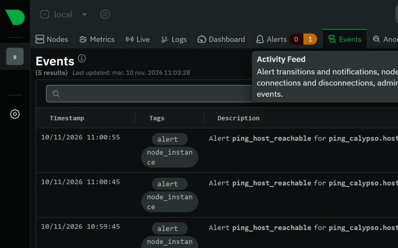

Existant (TP 1 à 3). Le siège de Calypso (Nanterre) repose sur quatre machines Debian 13 : gw (routeur, pare-feu nftables, NAT, serveur WireGuard), srv (DNS bind9, proxy Squid), web (intranet nginx en HTTPS, certificat signé par la CA interne de Calypso) et cli (poste du LAN).
Ajouté pendant le projet.
agence (routeur de l'agence de Lille, LAN 10.10.30.0/24) et un tunnel WireGuard site à site avec gw (réseau 10.10.99.0/24), lancé au démarrage.gw : les règles nftables F11 (UDP 51820), F12 à F14 (flux de nomade) et F15 à F19 (flux de l'agence), numérotées dans /etc/nftables.conf.srv : le réseau de l'agence ajouté aux ACL de bind9 et de Squid ; Netdata (dépôt officiel) avec cinq collecteurs ; le tableau de bord n'écoute que sur 127.0.0.1.cli ; il a été refait sur web (10.10.20.10), avec une clé créée sur web et un certificat signé par la CA de srv. Le compte SFTP chrooté echange y a aussi été créé.État à la remise. Les exigences E1 à E7 sont vérifiées (section 6). Le lab a aussi été remis dans l'état attendu à la fin du TP 3 (tunnel de nomade, intranet HTTPS et SFTP chrooté sur web, Squid actif). Les limites restantes sont en section 9.
| Réseau | Rôle | Passerelle | DHCP | Adresses fixes |
|---|---|---|---|---|
| 192.168.125.0/24 (NAT VMware, « Internet ») | WAN du siège et de l'agence | 192.168.125.2 | DHCP de VMware | gw .130, agence .137 (baux DHCP), nomade .135 |
| 10.10.10.0/24 | LAN du siège | 10.10.10.254 (gw) | Kea sur srv : 10.10.10.100 à .199 (réservation .50) | gw .254, srv .10 ; cli .100 (bail DHCP) |
| 10.10.20.0/24 | DMZ | 10.10.20.254 (gw) | aucun | gw .254, web .10 |
| 10.10.99.0/24 | Tunnels WireGuard | - | aucun | gw .1, nomade .2, agence .10 |
| 10.10.30.0/24 | LAN de l'agence | 10.10.30.1 (agence) | aucun (pas de poste) | agence .1 |
Politique par défaut de gw : drop en entrée et en transit, avec journalisation (gw-input-drop, gw-forward-drop). Les lignes F15 et suivantes ont été écrites avant les règles ; chaque règle nftables porte son numéro en commentaire.
| N° | Source → destination | Service | Justification |
|---|---|---|---|
| F1 | LAN → gw | TCP 22 | Administration de gw depuis le LAN |
| F2 | WAN (PC hôte) → gw | TCP 22 | Administration du lab depuis le PC hôte |
| F3 | LAN → Internet | tout (NAT) | Accès Internet des postes |
| F4 | LAN → DMZ | TCP 22, 80, 443 ; ping | Administration et test de web |
| F5 | WAN → web | TCP 80, 443 (DNAT) | Publication de l'intranet |
| F6 | DMZ → srv | DNS 53 TCP/UDP | Résolution de noms de web |
| F7 | DMZ → Internet | TCP 80, 443 | Mises à jour de web |
| F8 | DMZ → LAN (sauf F6) | tous | Interdit et journalisé : un web compromis ne doit pas atteindre le LAN |
| F9 | Internet → LAN | tous | Interdit et journalisé : le LAN n'est pas exposé |
| F10 | tout le reste | tous | Interdit et journalisé (politique drop, gw-input-drop et gw-forward-drop) |
| F11 | WAN → gw | UDP 51820 | Seul port ouvert pour WireGuard ; sans lui, pas de handshake |
| F12 | nomade (10.10.99.2) → gw | TCP 22 | Administration de gw par le VPN |
| F13 | nomade → srv | DNS 53 ; TCP 3128 | DNS interne et proxy Squid par le VPN |
| F14 | nomade → web ; nomade → partout | TCP 22, 80, 443 ; ping | Intranet et administration de web ; test de connectivité. F12 à F14 sont limitées à l'adresse de nomade |
| F15 | LAN → agence (via wg0) | TCP 22 ; ping | Administrer et superviser l'agence depuis le siège |
| F16 | agence → srv | DNS 53 TCP/UDP | DNS interne pour les salariés de l'agence |
| F17 | agence → srv | TCP 3128 | Proxy Squid |
| F18 | agence → web | TCP 80, 443 | Intranet |
| F19 | agence → srv | ping | Test de connectivité du tunnel |
Tout le reste, y compris le SSH de l'agence vers srv, est refusé et journalisé.
/etc/wireguard/wg0.conf[Interface] Address = 10.10.99.1/24 ListenPort = 51820 PrivateKey = <clé privée de gw> # Pair agence : son adresse de tunnel + tout son réseau local (d'où deux réseaux) [Peer] PublicKey = 5FGkbixUkHih7ncuFq/6PhnykaR1JZIklm7M3H/CeEc= AllowedIPs = 10.10.99.10/32, 10.10.30.0/24 # Pair nomade (TP 3) : une seule adresse de tunnel [Peer] PublicKey = LMbYZk3EXJ/v5rn2zR6e6su1nw/7fbBBi98v25OnA0g= AllowedIPs = 10.10.99.2/32
/etc/wireguard/wg0.conf (service wg-quick@wg0 activé)[Interface] Address = 10.10.99.10/24 ListenPort = 51820 PrivateKey = <clé privée de agence> # Pair gw : le tunnel, le LAN et la DMZ du siège [Peer] PublicKey = qX3S79x/ju9vBlw+HjE9y2+HA9/azIvrQdvJL7eoaVY= Endpoint = 192.168.125.130:51820 AllowedIPs = 10.10.99.0/24, 10.10.10.0/24, 10.10.20.0/24 PersistentKeepalive = 25
/etc/nftables.conf (lignes ajoutées)define WEB = 10.10.20.10 # corrigé (avant : 10.10.10.100)
define VPN = "wg0"
define AGENCE = 10.10.30.0/24
define NOMADE = 10.10.99.2
# chaîne input, avant le log :
iifname $WAN udp dport 51820 accept # [F11]
iifname $VPN ip saddr $NOMADE tcp dport 22 accept # [F12]
# chaîne forward, avant le log :
iifname $VPN oifname $LAN ip saddr $NOMADE ip daddr $SRV meta l4proto { tcp, udp } th dport 53 accept # [F13]
iifname $VPN oifname $LAN ip saddr $NOMADE ip daddr $SRV tcp dport 3128 accept # [F13]
iifname $VPN oifname $DMZ ip saddr $NOMADE ip daddr $WEB tcp dport { 22, 80, 443 } accept # [F14]
iifname $VPN ip saddr $NOMADE icmp type echo-request accept # [F14]
iifname $LAN oifname $VPN ip daddr $AGENCE tcp dport 22 accept # [F15]
iifname $LAN oifname $VPN ip daddr $AGENCE icmp type echo-request accept # [F15]
iifname $VPN ip saddr $AGENCE ip daddr $SRV meta l4proto { tcp, udp } th dport 53 accept # [F16]
iifname $VPN ip saddr $AGENCE ip daddr $SRV tcp dport 3128 accept # [F17]
iifname $VPN ip saddr $AGENCE ip daddr $WEB tcp dport { 80, 443 } accept # [F18]
iifname $VPN ip saddr $AGENCE ip daddr $SRV icmp type echo-request accept # [F19]
Les règles sont placées avant les lignes de journalisation : une règle après le log serait atteinte trop tard pour être utile. Rechargement avec un retour arrière programmé (systemd-run --on-active) qui restaure la sauvegarde si la connexion était perdue.
/etc/network/interfaces : ens37 en DHCP (WAN) - ens38 static 10.10.30.1/24 (LAN) /etc/ssh/sshd_config.d/10-calypso.conf : PasswordAuthentication no KbdInteractiveAuthentication no PermitRootLogin no
Rendue unique comme web au TP 2 : nom d'hôte agence, machine-id propre et clés d'hôte SSH régénérées (ssh-keygen -A), donc différentes de celles de debian-base.
/etc/bind/named.conf.options, acl "calypso" : + 10.10.30.0/24; // agence
/etc/squid/conf.d/calypso.conf : acl calypso src 10.10.10.0/24 10.10.20.0/24 10.10.99.0/24 10.10.30.0/24
(Squid était arrêté et désactivé : systemctl enable --now squid)
DHCP (Kea sur srv) : l'option domain-name-servers annonçait 10.10.10.100 (l'adresse de cli) ; elle est corrigée en 10.10.10.10 (srv).
Nginx sur web : clé privée et demande de certificat créées sur web, signées par la CA de srv (SAN : intranet, www et web .calypso.internal), certificat dans /etc/ssl/certs/intranet.crt, clé en root:root 600, résolveur nameserver 10.10.10.10. SFTP : groupe sftp-calypso, compte echange (nologin) enfermé dans /srv/sftp/echange (dossier depot), connexion par clé uniquement. Nginx est arrêté et désactivé sur cli.
Dépôt officiel Netdata (repository.netdata.cloud, suite trixie, clé de signature dans /usr/share/keyrings), paquet netdata 2.12.3, statistiques anonymes désactivées, CA de Calypso ajoutée au magasin de certificats de srv.
/etc/netdata/netdata.conf : [web] bind to = 127.0.0.1 /etc/netdata/go.d/ping.conf hosts: 10.10.10.254 (gw), 10.10.10.10 (srv), 10.10.20.10 (web), 10.10.30.1 (agence) /etc/netdata/go.d/portcheck.conf gw:22 - srv:22,3128 - web:22,80,443 - agence:22 /etc/netdata/go.d/httpcheck.conf http://10.10.20.10/ (200 ou 301) ; https://intranet.calypso.internal/ (200, texte « Intranet de Calypso ») /etc/netdata/go.d/dns_query.conf serveur 10.10.10.10 : intranet.calypso.internal, web.calypso.internal (A) /etc/netdata/go.d/x509check.conf https://intranet.calypso.internal:443 (alerte à 14 j, critique à 7 j)
Depuis l'agence, les tests utilisent la source 10.10.30.1 (aucun poste dans l'agence). Résultats relevés le 10/11/2026.
| Test | Attendu | Obtenu | Conf. |
|---|---|---|---|
ip -br addr sur agence | adresse WAN + 10.10.30.1/24 | ens37 192.168.125.137/24 ; ens38 10.10.30.1/24 | oui |
sshd -T sur agence | root interdit, clé seule | permitrootlogin no ; passwordauthentication no | oui |
wg show (gw et agence) | handshake récent, pairs corrects | « latest handshake » de 9 et 10 s ; ping 10.10.99.1 : 2/2 | oui |
Redémarrage de gw (11:16), puis wg show sur gw | tunnels relevés seuls, règles F11 et F15 à F19 rechargées | gw revenue en ~35 s ; handshakes de agence et de nomade en moins d'une minute ; ip_forward = 1 | oui |
Redémarrage de agence, puis wg show | tunnel relevé seul | agence revenue en ~35 s ; handshake en 9 s ; wg-quick@wg0 enabled | oui |
Tunnel de nomade : wg show, puis ping 10.10.99.1 depuis nomade | tunnel de nomade fonctionnel | handshake en 4 s ; ping : 2 reçus sur 2 | oui |
| Depuis nomade (10.10.99.2) : DNS, HTTP et HTTPS vers web, proxy 3128 ; SSH vers srv | autorisés (F12 à F14) ; SSH refusé | NOERROR et 10.10.20.10 ; 200 et 200 ; 3128 joignable ; SSH timed out | oui |
ping -I 10.10.30.1 -c1 10.10.10.10 | 1 received | 1 packets received | oui |
dig +short -b 10.10.30.1 @10.10.10.10 intranet.calypso.internal | web.calypso.internal. puis 10.10.20.10 | web.calypso.internal. 10.10.20.10 (NOERROR) | oui |
curl --interface 10.10.30.1 http / https vers 10.10.20.10 | 200 (ou 301) | 200 / 200 | oui |
Proxy : nc -zv -s 10.10.30.1 10.10.10.10 3128 | port joignable | succeeded ; requête HTTP via le proxy : 200 | oui |
nc -zv -w 3 -s 10.10.30.1 10.10.10.10 22 | timed out (refusé) | timed out ; ligne gw-forward-drop ci-dessous | oui |
Depuis srv : ping 10.10.30.1 ; ssh nael@10.10.30.1 hostname | réponse ; connexion par clé | 1 received ; « agence » | oui |
| Ports TCP de gw côté WAN (scan depuis le PC hôte) | aucun nouveau port | ouverts : 22 (F2), 80 et 443 (F5) ; fermés : 53, 3128, 19999. UDP 51820 ouvert par F11 (nécessaire au tunnel) | oui |
| Tableau de bord Netdata | non exposé | ss -tlnp : 127.0.0.1:19999 uniquement | oui |
Refus journalisé sur gw (journalctl -k | grep gw-forward-drop) :
nov. 10 11:04:57 gw kernel: gw-forward-drop: IN=wg0 OUT=ens37 SRC=10.10.30.1 DST=10.10.10.10 LEN=60 PROTO=TCP SPT=38907 DPT=22 SYN
Ce qui est supervisé (Netdata sur srv) : présence de gw, srv, web et agence (ping) ; ports SSH, 80, 443 et 3128 ; code et contenu de l'intranet (HTTP et HTTPS) ; résolution DNS ; expiration du certificat de l'intranet. Les alertes sont les modèles fournis par Netdata (par exemple ping_host_reachable, portcheck_connection_fails, httpcheck_web_service_up, x509check_days_until_expiration).
Accès au tableau de bord. Il n'écoute que sur 127.0.0.1. Depuis le PC, on ouvre un tunnel SSH puis le navigateur sur http://127.0.0.1:19999 :
ssh -L 19999:127.0.0.1:19999 srv
Panne provoquée. Arrêt du tunnel sur agence (sudo systemctl stop wg-quick@wg0). Heures relevées dans le journal d'alertes de Netdata (/api/v1/alarm_log) :
| Heure (10/11/2026) | Événement |
|---|---|
| 10:58:35 | Arrêt du tunnel sur agence |
| 10:59:15 | Alerte ping_host_reachable (10.10.30.1) : CLEAR → CRITICAL |
| 10:59:31 | Rétablissement : sudo systemctl start wg-quick@wg0 (handshake en 3 s) |
| 10:59:45 | Alerte : CRITICAL → CLEAR |
Une seconde transition (vers 11:00) correspond au redémarrage d'agence du test de la section 6. Première commande en cas de tunnel tombé : sudo wg show des deux côtés, puis journalctl -k | grep 51820 sur gw.

ping_host_reachable.| Symptôme | Diagnostic | Solution |
|---|---|---|
| Pas de « latest handshake » (rencontré) | journalctl -k | grep 51820 sur gw montrait gw-input-drop sur UDP 51820 ; wg show : clé publique du pair différente de celle de gw | Ajouter F11 ; mettre dans le pair la clé publique réelle de gw (wg pubkey < clé) |
| Handshake correct, mais rien ne passe | ip route | grep wg0 ; ping -I 10.10.30.1 ; AllowedIPs du pair agence côté gw | Inclure 10.10.30.0/24 côté gw ; 10.10.10.0/24 et 10.10.20.0/24 côté agence |
| DNS en REFUSED, proxy en 403 depuis l'agence (rencontré) | dig : status REFUSED ; ACL de bind9 et de Squid sans 10.10.30.0/24 | Ajouter le réseau aux deux ACL ; named-checkconf, squid -k parse, rechargement |
| srv ne joint pas 10.10.30.1 | journalctl -k | grep gw-forward-drop (OUT=wg0) : F15 absente ou placée après le log | Placer F15 avant la ligne de journalisation |
| Le tunnel ne remonte pas au redémarrage (rencontré) | systemctl is-enabled wg-quick@wg0 : disabled | systemctl enable --now wg-quick@wg0 |
| Netdata : alerte HTTPS en CRITICAL | curl -sS https://intranet.calypso.internal sur srv : certificat inconnu | Installer la CA de Calypso sur srv (update-ca-certificates) |
| Tableau de bord injoignable | ss -tlnp | grep 19999 sur srv ; tunnel SSH ouvert ? | Relancer ssh -L 19999:127.0.0.1:19999 srv ; systemctl restart netdata |
| L'intranet répond sur la mauvaise machine (rencontré) | Le DNS donne 10.10.20.10 mais nginx tournait sur 10.10.10.100 ; ssh web pointait sur cli | Installer l'intranet sur web, corriger WEB dans nftables et l'alias SSH |
/root/backup-projet ; il faudrait un script et un minuteur systemd, hors du serveur.sudo sans mot de passe a été créé pour l'automatisation (/etc/sudoers.d/90-nael) et une clé SSH sans phrase de passe existe sur srv pour joindre agence : à supprimer après la remise.Les numéros entre crochets renvoient à la matrice des flux (section 4).
#!/usr/sbin/nft -f
# /etc/nftables.conf de gw : pare-feu de Calypso (TP 2 complété ; F11 à F14 ajoutées au TP 3, F15 à F19 au projet de synthèse)
# Chaque règle applique une ligne de la matrice (numéro entre crochets).
# Vérifier : sudo nft -c -f /etc/nftables.conf Charger : sudo systemctl reload nftables
flush ruleset
# --- cartes réseau et adresses (adapter les noms : ip -br link) ---------------
define WAN = "ens33"
define LAN = "ens37"
define DMZ = "ens38"
define SRV = 10.10.10.10
define WEB = 10.10.20.10
define VPN = "wg0"
define AGENCE = 10.10.30.0/24
define NOMADE = 10.10.99.2
# --- filtrage (IPv4 et IPv6) ------------------------------------------------
table inet filtre {
# paquets destinés à gw lui-même
chain input {
type filter hook input priority filter; policy drop; # trou 1 : liste blanche
ct state established,related accept # trou 2 : les réponses
ct state invalid drop
iif "lo" accept
meta l4proto ipv6-icmp accept # IPv6 : découverte des voisins
icmp type echo-request limit rate 5/second accept # ping de gw, limité
iifname $LAN tcp dport 22 accept # trou 3 : [F1]
iifname $WAN tcp dport 22 accept # [F2] administration depuis le PC hôte (lab)
iifname $WAN udp dport 51820 accept # [F11] WireGuard : UDP 51820 depuis le WAN (tunnel de l'agence)
iifname $VPN ip saddr $NOMADE tcp dport 22 accept # [F12] administration de gw par le VPN (limitee a nomade)
log prefix "gw-input-drop: " level info
}
# paquets qui traversent gw (entre LAN, DMZ et Internet)
chain forward {
type filter hook forward priority filter; policy drop;
ct state established,related accept
ct state invalid drop
iifname $LAN oifname $WAN accept # trou 4 : [F3] LAN → Internet
iifname $LAN oifname $DMZ tcp dport { 22, 80, 443 } accept # trou 5 : [F4] LAN → DMZ
iifname $LAN oifname $DMZ icmp type echo-request accept # [F4] ping LAN → DMZ
iifname $WAN oifname $DMZ ip daddr $WEB tcp dport { 80, 443 } ct status dnat accept # [F5]
iifname $DMZ oifname $LAN ip daddr $SRV meta l4proto { tcp, udp } th dport 53 accept # trous 6 et 7 : [F6]
iifname $DMZ oifname $WAN tcp dport { 80, 443 } accept # [F7] mises à jour de web
# --- nomade (TP 3) : F13 et F14, limites a l'adresse de nomade ------------
iifname $VPN oifname $LAN ip saddr $NOMADE ip daddr $SRV meta l4proto { tcp, udp } th dport 53 accept # [F13] DNS par le VPN
iifname $VPN oifname $LAN ip saddr $NOMADE ip daddr $SRV tcp dport 3128 accept # [F13] proxy Squid par le VPN
iifname $VPN oifname $DMZ ip saddr $NOMADE ip daddr $WEB tcp dport { 22, 80, 443 } accept # [F14] intranet et administration de web
iifname $VPN ip saddr $NOMADE icmp type echo-request accept # [F14] ping depuis le VPN
# --- agence (projet de synthese) : F15 et suivantes ---------------------
iifname $LAN oifname $VPN ip daddr $AGENCE tcp dport 22 accept # [F15] siege (LAN) -> agence : administration SSH
iifname $LAN oifname $VPN ip daddr $AGENCE icmp type echo-request accept # [F15] siege (LAN) -> agence : ping (supervision)
iifname $VPN ip saddr $AGENCE ip daddr $SRV meta l4proto { tcp, udp } th dport 53 accept # [F16] agence -> DNS de srv
iifname $VPN ip saddr $AGENCE ip daddr $SRV tcp dport 3128 accept # [F17] agence -> proxy Squid de srv
iifname $VPN ip saddr $AGENCE ip daddr $WEB tcp dport { 80, 443 } accept # [F18] agence -> intranet (web)
iifname $VPN ip saddr $AGENCE ip daddr $SRV icmp type echo-request accept # [F19] agence -> srv : ping (test de connectivite)
log prefix "gw-forward-drop: " level info
}
# paquets émis par gw : on lui fait confiance
chain output {
type filter hook output priority filter; policy accept;
}
}
# --- traduction d'adresses (IPv4) -------------------------------------------
table ip nat {
# NAT destination : publier web sur l'adresse WAN de gw [F5]
chain prerouting {
type nat hook prerouting priority dstnat; policy accept;
iifname $WAN tcp dport { 80, 443 } dnat to $WEB # trou 8
}
# NAT source : le LAN et la DMZ sortent avec l'adresse WAN de gw
chain postrouting {
type nat hook postrouting priority srcnat; policy accept;
oifname $WAN masquerade # trou 9
}
}
# ===== /etc/netdata/netdata.conf
# /etc/netdata/netdata.conf de srv : tableau de bord limite a la boucle locale (E6).
# Acces depuis le PC : ssh -L 19999:127.0.0.1:19999 srv puis http://127.0.0.1:19999
[web]
bind to = 127.0.0.1
# ===== /etc/netdata/go.d/ping.conf
# Presence des machines (ICMP) : gw, srv, web, agence (agence est joint par le tunnel WireGuard)
jobs:
- name: calypso
hosts:
- 10.10.10.254 # gw
- 10.10.10.10 # srv
- 10.10.20.10 # web
- 10.10.30.1 # agence (via wg0)
packets: 3
interval: 5
# ===== /etc/netdata/go.d/portcheck.conf
# Ports des services : SSH, 80, 443, 3128
jobs:
- name: gw
host: 10.10.10.254
ports: [22]
- name: srv
host: 10.10.10.10
ports: [22, 3128]
- name: web
host: 10.10.20.10
ports: [22, 80, 443]
- name: agence
host: 10.10.30.1
ports: [22]
# ===== /etc/netdata/go.d/httpcheck.conf
# Contenu de l'intranet : code HTTP et texte attendu dans la page
jobs:
- name: intranet_http
url: http://10.10.20.10/
status_accepted: [200, 301]
- name: intranet_https
url: https://intranet.calypso.internal/
status_accepted: [200]
response_match: 'Intranet de Calypso'
# ===== /etc/netdata/go.d/dns_query.conf
# Resolution DNS aupres du serveur interne (srv)
jobs:
- name: srv_dns
domains:
- intranet.calypso.internal
- web.calypso.internal
servers:
- 10.10.10.10
record_types: [A]
# ===== /etc/netdata/go.d/x509check.conf
# Expiration du certificat de l'intranet (alerte a 14 j, critique a 7 j)
jobs:
- name: intranet
source: https://intranet.calypso.internal:443
days_until_expiration_warning: 14
days_until_expiration_critical: 7